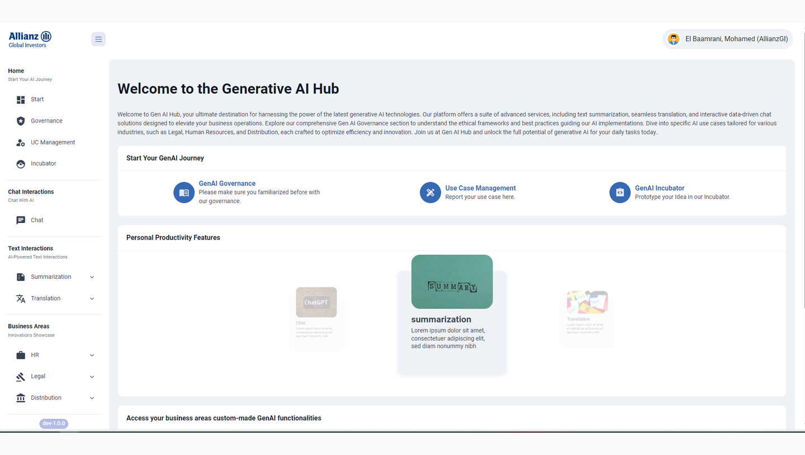
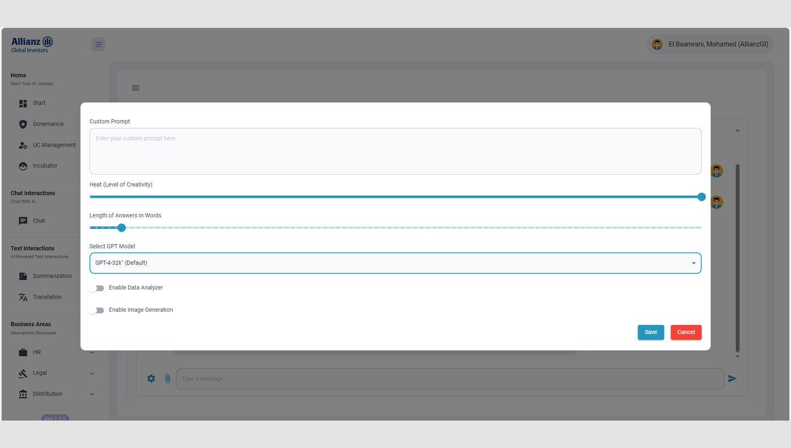
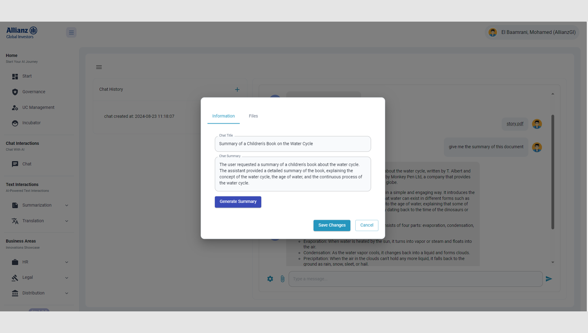
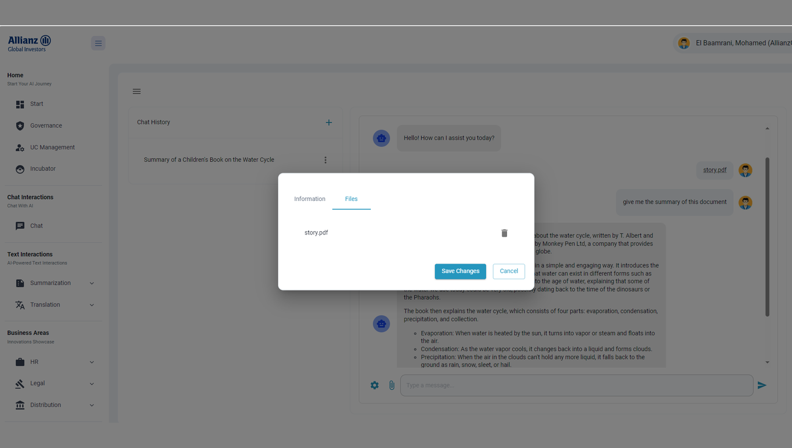

Un seul portail
Gouvernance, chat, outils de texte et apps privées pour des équipes comme les RH et le juridique, au même endroit.
Étude de cas · Stage de fin d'études
Un seul endroit pour tous les services IA d'Allianz Global Investors, en commençant par « Chat with your data ».

Envoyez un fichier, posez une question, obtenez une réponse tirée de votre document.
La version 30 secondes
Chez Allianz Global Investors, j'ai construit le MVP du Gen AI Hub, un portail unique pour les services IA de l'entreprise, et sa première fonction, « Chat with your data » : envoyer un fichier et lui poser des questions. Ma démo aux décideurs a débouché sur le budget pour la production.
Le problème
Tirer des réponses des documents internes demandait du temps et des compétences techniques, les outils IA se multipliaient sans point d'entrée commun, et la direction voulait des preuves avant d'investir plus.
Ce que j'ai construit

Gouvernance, chat, outils de texte et apps privées pour des équipes comme les RH et le juridique, au même endroit.
Joignez un fichier et posez votre question ; GPT-4 répond à partir des passages trouvés dans votre document.

Choisissez le modèle, la créativité et la longueur des réponses, ou ajoutez un prompt personnalisé.

Un clic génère un titre et un résumé pour retrouver facilement ses chats.

Supprimer un fichier l'efface à la fois de la base et de l'index de recherche.
Comment c'est construit
Les fichiers envoyés sont découpés et indexés par Azure AI Search. Pour chaque question, un premier prompt écrit une requête à partir du chat, un second répond à partir des résultats.
App web React
Portail, chat, envois et historique.
Serveur Flask · CQRS
Accès par rôle. Chaque prompt est vérifié par Azure AI Content Safety.
Semantic Kernel
Blob → AI Search
Découpe et indexe chaque nouveau fichier.
Azure OpenAI
GPT-4 pour les requêtes, les réponses et les résumés.
SQL Server · Datadog
Historique des chats et supervision.
Les parties difficiles
01
« Et la deuxième partie ? » est une mauvaise requête. Le LLM la reformule d'abord avec l'historique du chat, puis la recherche se lance.
02
Le texte de l'utilisateur et les documents finissent tous deux dans le prompt. Azure AI Content Safety vérifie chaque prompt et alerte l'équipe sécurité en cas d'attaque.
03
GPT-4 coûte cher à grande échelle. On choisit le modèle par chat et on ne passe à un plus puissant que si besoin.
Comment j'ai travaillé
Ce que j'ai appris
La suite (à la passation)
Je cherche un CDI en ingénierie logicielle ou IA.